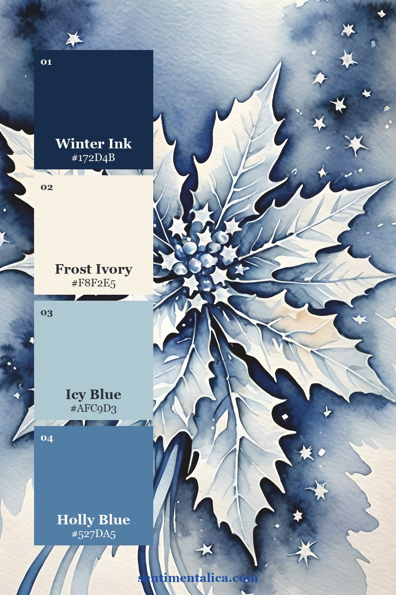
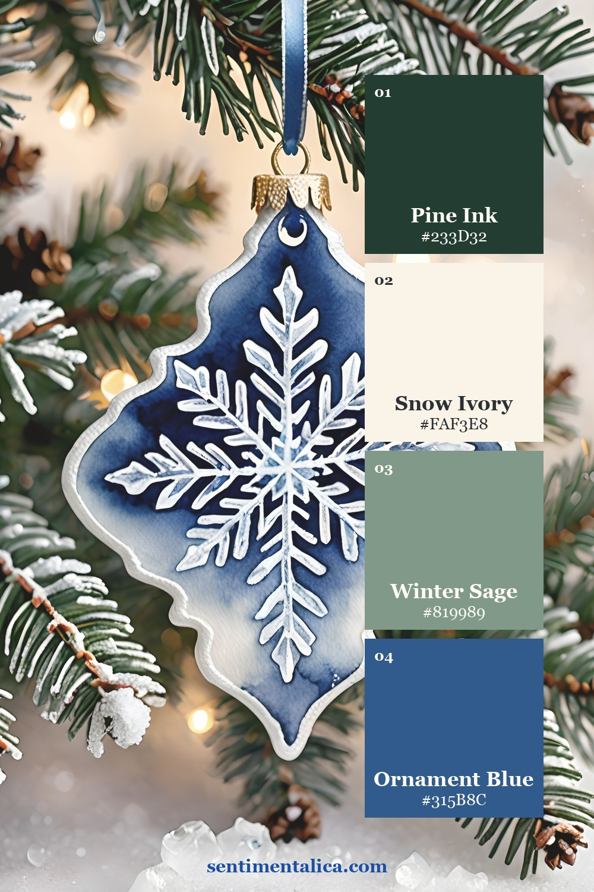
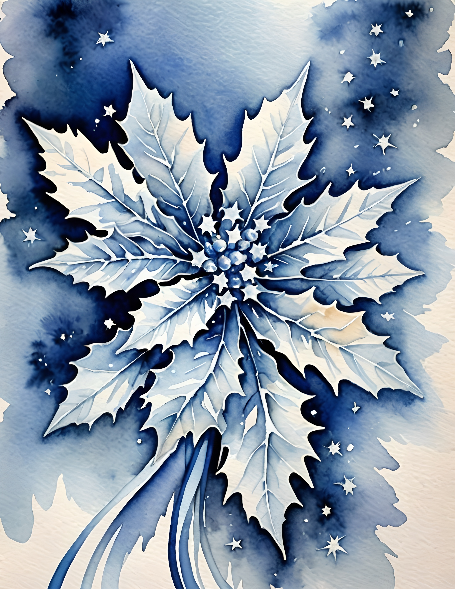
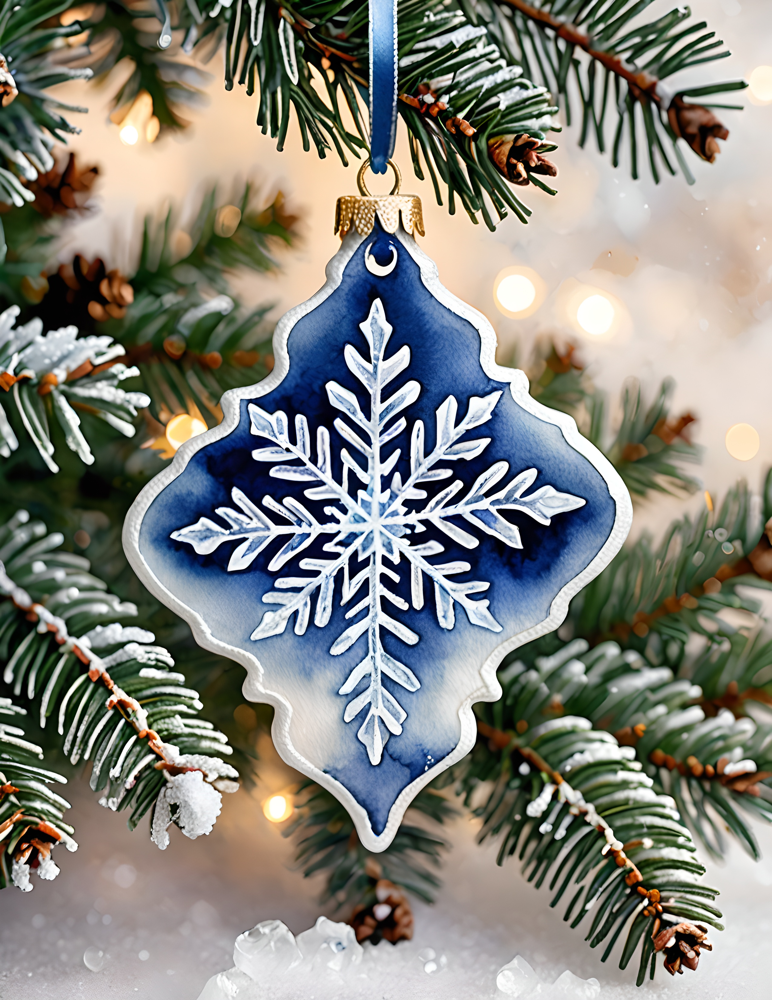
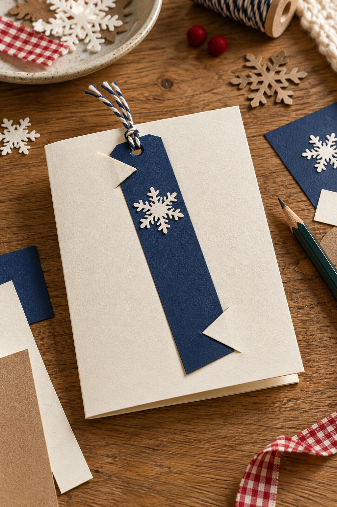
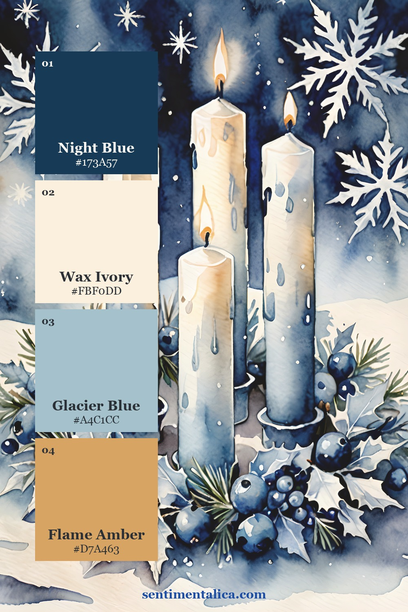

A Christmas card can hold something useful long after the decorations come down. Make two corner slits in a separate front panel to hold a removable snowflake bookmark: the card carries your message, and the small paper piece follows the recipient into their next book.
The removable part is separate, so there is no perforation to tear and no special mechanism to buy. You make both pieces from plain cardstock and printable winter artwork. Have a folded card blank, thin cardstock, a ruler, scissors or a trimmer, and paper adhesive ready.
Start with the removable piece
Cut a scrap-paper bookmark first. A shape around 2 by 6 inches is a useful starting point, but shorten it if your card is smaller. Hold it against the closed card and leave enough space above the upper slit for the recipient to grasp it easily.
Use a simple rectangle with gently rounded corners if you like. The corners sliding into the slits should have smooth edges. Thick lace, raised decorations, and bulky ribbon near the bottom can catch and make the little gift frustrating to remove.
The bookmark should lift out with one easy motion. Test that before you decorate the card.
Keep the snowflakes readable
Navy makes pale snowflakes clear even on a narrow strip. Choose a crop with some open wash around the flakes, so the bookmark remains a small winter scene rather than a jumble of clipped shapes. Use cream or icy white on the card to give that dark strip a quiet background.

A softer icy blue can connect the bookmark with its holding panel. It is especially useful when you want the piece to feel seasonal beyond Christmas Day. Repeat that blue once on the card and let the bookmark remain the darkest area.

Choose how festive to go
The winter Christmas collection combines intricate snowflakes with holly, red berries, iced gingerbread cookies, evergreen sprigs, and snowy scenes. A snowflake bookmark paired with a small holly crop gives a clear Christmas feeling; snowflakes alone make a quieter winter gift.
The real pages below show the source artwork. You will choose the crop, size the bookmark, and cut the holding panel yourself; the collection is an image resource for that construction.


Cut two corner slits in a separate panel
Cut a separate cream cardstock panel slightly smaller than the card front. Lay the bookmark on it and mark two short diagonal lines across opposite corners: one near the upper left and one near the lower right. Test the placement on scrap paper first, leaving most of the bookmark visible.
Remove the bookmark and cut only the marked slits in the separate panel, using a craft knife on a cutting mat. Never cut through the folded card base. Tuck the bookmark corners under the small retaining flaps and test removal. Once it slides comfortably, attach the panel to the card around its outer edges, keeping glue away from the slits and the bookmark path.

Use a small holiday accent
Berry red can be the tiny finishing note, especially if your selected artwork already includes holly. Warm gingerbread brown offers a softer alternative. Choose one of those directions and keep the greeting plain, so the removable gift stays easy to spot.

Mount the printed bookmark artwork onto thin cardstock, smoothing from the middle outward. Trim after the adhesive dries so both layers share a clean edge. Keep the back plain for a short wish, the year, or a line such as “For the next quiet chapter.”
Slide the bookmark in and out several times. If it feels tight, lengthen the slits a little in the separate panel before attaching it, instead of forcing the corners. Write “A little bookmark for your winter reading” inside the card so the recipient understands the removable piece. The result is a greeting with a second, gentle purpose.